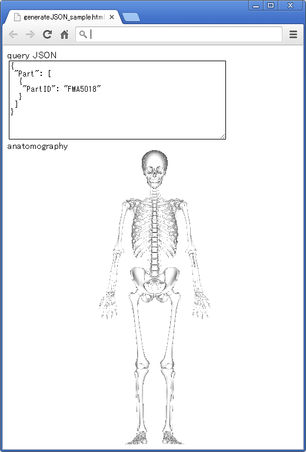

Anatomography Map API サンプルコード - html + javascript - JSON形式パラメータを動的に生成する
概要ウェブアプリケーションを想定して、javascriptでAnatomography map APIに渡すためのJOSNパラメータを動的に生成するウェブページを作成します。サンプルコード空のhtmlファイルを作成し、テキストエディタで以下の内容をコピー＆ペースト、保存して下さい。
<html>
<head>
<!-- load google hosted jquery library -->
<script src="http://ajax.googleapis.com/ajax/libs/jquery/2.0.3/jquery.min.js"></script>
<script type="text/javascript">
$(function() {
var bp3dApiBase = "http://lifesciencedb.jp/bp3d/API/";
var method = "image"; // define API method
var queryObj = new Object(); // define object for query JSON
queryObj["Part"] = new Array(); // define part as array
var partObj = new Object(); // construct part object
partObj["PartID"] = "FMA5018"; // set PartID of part object as "FMA5018"
queryObj["Part"].push(partObj); // add part object to json object
var jsonString = JSON.stringify(queryObj, null, " "); // convert json object to JSON string
$("#json").val(jsonString); // display JSON string in textarea
$("#anatomography").attr('src', bp3dApiBase + method + "?" + jsonString); // update img src to show anatomography
})
</script>
</head>
<body>
query JSON<br />
<!-- textarea to show JSON string -->
<textarea id="json" rows="10" cols="50" ></textarea><br />
anatomography<br />
<img id="anatomography" src=''>
</body>
</html>
 改行等がありますが、Anatomography Map APIに渡すことができる形式のデータが動的に生成されていることが分かります。 応用var method = "image";という行の"image"を"animation"に変更してウェブブラウザで表示してみて下さい。FMAIDを"FMA5018"以外のIDにへんこうして、ウェブブラウザで表示してみて下さい。 |